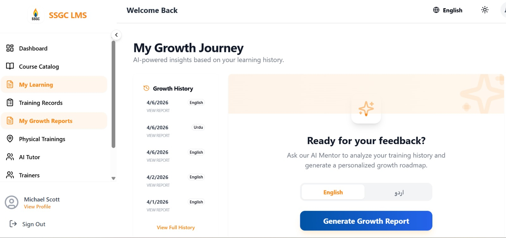
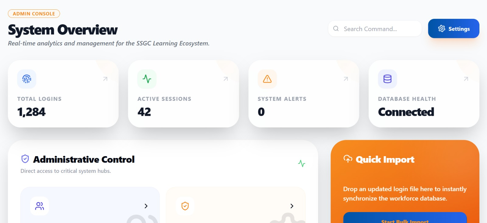
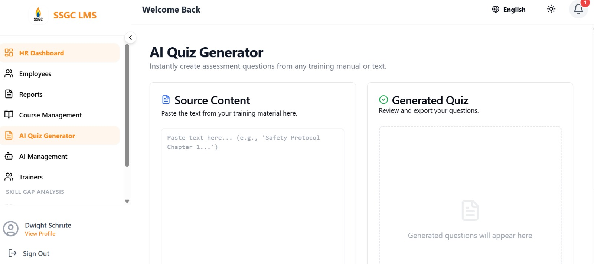
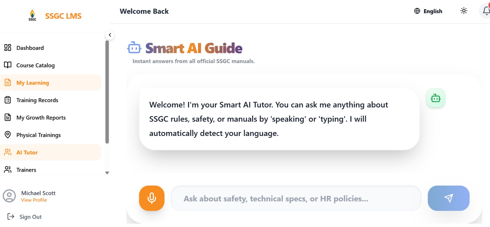

My Work
Projects & Case Studies
A collection of data analytics, machine learning, and dashboard projects — each solving a real-world problem.
Featured Project
SSGC Learning Management System
Designed and developed a full Learning Management System for SSGC's workforce digital training delivery. The platform enables employees to access training materials, enroll in courses, track their learning progress, and complete assessments. Administrators get a comprehensive analytics dashboard with department-level training completion, skills heatmaps, and automated certification management.
Project Screenshots — 5 Views

01 / 05
Employee Dashboard — Training Overview

02 / 05
Admin Dashboard — Skills Heatmap & Completion

03 / 05
Analytics — HR Dashboard

04 / 05
AI Quiz Generator

05 / 05
Smart AI Guide
More Projects
Other Work
Data wrangling, regression models, NLP pipelines and more.
HR Analytics
Machine Learning · HR
HR Analytics — Performance & Career Management
Built ML models using Random Forest, Logistic Regression, and XGBoost for promotion and performance prediction. Applied K-Means clustering for employee segmentation. Developed an interactive Streamlit app for HR decision support.
View on GitHub
NLP · Deep Learning
Deep Learning · NLP
Skills Ontology & Gap Analysis
Applied LSTM and Word2Vec models to extract and classify skills from job descriptions and resumes. Built a skills ontology to visualize role-based requirements and identify competency gaps using KMeans clustering.
View on GitHub
Regression · ML
Machine Learning
House Price Prediction
Developed a predictive model using regression algorithms in Python to estimate house prices based on key features. Utilized a Kaggle dataset with feature engineering to analyze trends and improve prediction accuracy.
View on GitHub
EDA · Analytics
Analytics · EDA
Customer Behavior Analysis — iFood
Comprehensive analysis and preprocessing of the iFood dataset to understand customer purchasing behavior. Cleaned, visualized, and transformed data for machine learning applications including segmentation.
View on GitHub
Web Scraping
Data Engineering
Web Scraping — "The News" Website
Collaborated with a team to build a tool automating the extraction of news reports from the web. Gathered report links and retrieved detailed reports, demonstrating skills in scraping pipelines and data processing.
View on GitHub
Data Wrangling
Data Wrangling
Data Wrangling — Banks Dataset
Cleaned and transformed financial data from an Excel file using pandas. Used melt for reshaping, extracted financial ratios from text, and prepared the dataset for downstream statistical analysis.
View on GitHub